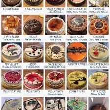
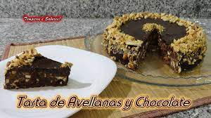
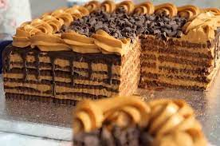

TARTA
Una tarta (en algunos países de Hispanoamérica, torta), también llamada pastel, es un tipo de pastel tradicionalmente redondo compuesto de una o más capas de masa dulce cocida al horno, rellenadas y decoradas con crema (pastelera, trufa, nata), fruta, chocolate u otros ingredien.
|  |
Tarta de avellanas y chocolate.
TURRÓN y SIN HORNO, rápida y fácil.
Una tarta tan fácil de hacer crujiente como el turrón con el sabor único de la avellana y del chocolate, es sencillamente deliciosa,
|  |
Chocotorta.
La chocotorta es un postre originario de Argentina. Con el lanzamiento en 1975 por Bagley de una variedad de galletitas de chocolate, marca Chocolinas, en muchas poblaciones del sur de Santa Fe se comenzó a elaborar en los hogares esta torta, conocida como «el postre de las chocolinas.
|  |
Vainillas y frutillas con crema.
Esta refrescante y golosa tarta de masa quebrada, una suave crema avainillada y fruta fresca, puede ser que se convierta en uno de vuestros pasteles preferidos, pero no os demoréis en hacerla, las fresas pronto desaparecerán del mercado y no es cosa de que estéis pensando el resto del invierno en este postre que no habéis probado.
| |
Torta Oreo.
Suculenta y muy buena su textura es adecuada,con un sabor delicioso,y para los amantes de queso yu galleta oreo quedan encantados con esta tarta.
| |